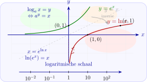

Hoofdstuk 8Logaritmische functies

Leerplandoelstellingen (GO! Navigator)
Basisvorming (BV3_06)
-
• BV3_06.01 (MD 06.01) De leerlingen rekenen met reële getallen.
-
– afbakening: machten met rationale exponent, n-de machtswortels en logaritmen met willekeurig grondtal met inbegrip van rekenregels en eigenschappen met symbolen
-
Gevorderde wiskunde (WD3_06.08)
-
• WD3_06.08.18 (MD 06.08.13) De leerlingen lossen eenvoudige veeltermvergelijkingen, rationale vergelijkingen, irrationale vergelijkingen, exponentiële vergelijkingen, logaritmische vergelijkingen en goniometrische vergelijkingen algebraı̈sch op.
-
– afbakening: deling van veeltermen
-
– afbakening: deling door \((x-a)\)
-
-
• WD3_06.08.20 (MD 06.08.08) De leerlingen leggen grafisch het verband tussen inverteerbare functies en hun inverse.
-
– afbakening: bijectie
-
– afbakening: cyclometrische functies
-
-
• WD3_06.08.21 (MD 06.08.07) De leerlingen leggen het verband tussen de grafiek en het voorschrift van een functie en haar kenmerken.
-
– afbakening: veeltermfuncties, rationale functies, (elementaire) irrationale functies, exponentiële functies, logaritmische functies \(f(x)=\log _a(x)\), goniometrische functies \(f(x)=\cos x\) en \(f(x)=\tan x\), cyclometrische functies, absolute waardenfunctie, meervoudig functievoorschrift
-
– afbakening: domein, bereik, nulwaarden, tekenverloop, stijgen/dalen/constant, extrema, constante/toenemende/afnemende stijging/daling, symmetrie, periode, amplitude, asymptotisch gedrag, gedrag op oneindig
-
Didactische uitwerking: inverse functie, grafiek als spiegelbeeld t.o.v. de 1e bissectrice, logaritmische vergelijkingen, logaritmische schaal
Extra uitleg: Briggsche logaritmen, natuurlijke of Neperiaanse logaritmen, eigenschappen van logaritmen met zelfde grondtal, eigenschappen van logaritmen met \(\neq \) grondtal, logaritmisch papier
I Logaritme van een strikt positief getal
1 Inleiding
Uit een gegeven bewerking met reële getallen kunnen we steeds een inverse bewerking afleiden:
\[ \begin {array}{@{}rcll@{}} \text {optelling:} & 4+7=11 & \Rightarrow & \text {aftrekking: } 7=11-4 \text { of } 4=11-7 \\[0.3em] \text {vermenigvuld.:} & 5\cdot 6=30 & \Rightarrow & \text {deling: } \dfrac {30}{5}=6 \text { of } \dfrac {30}{6}=5 \\[0.3em] \text {machtsverheffing:} & 2^3=8 & \Rightarrow & \text {worteltrekking: } \sqrt [3]{8}=2 \\ & & \Rightarrow & ? 3 = ? \end {array} \]
\(\seteqnumber{0}{}{0}\)\begin{align*} \text {we zeggen dat } 3 & =\log _2 8 \\ & = \text {``logaritme met grondtal 2 van 8''} \end{align*}
2 Definitie
De logaritme met grondtal \(a \in \R _0^+ \setminus \{1\}\) van een reëel getal is de exponent tot macht waartoe we \(a\) moeten verheffen om dit getal te krijgen.
\[ \begin {array}{@{}l@{\qquad }l@{}} \forall a \in \R _0^+ \setminus \{1\} & \boxed {\log _a x = y \Leftrightarrow a^y = x} \end {array} \]
Een logaritme zoeken is dus een exponent zoeken!
3 Bijzondere gevallen
\(\seteqnumber{0}{}{0}\)\begin{align*} a &= 10 &\Rightarrow \quad \log _{10} x &= \log x &&\text {Briggsche logaritmen.}\\ a &= e &\Rightarrow \quad \log _e x &= \ln x &&\text {natuurlijke of}\\ &&&&&\text {Neperiaanse logaritmen.} \end{align*}
4 Voorbeelden
\(\seteqnumber{0}{}{0}\)\begin{align*} \log _5 25 &= 2, &&\text {want } 5^2=25\\ \log _3 \frac {1}{9} &= -2, &&\text {want } 3^{-2}=\frac {1}{9}\\ \log _2 32 &= 5\\ \log _7 \sqrt {7} &= \frac {1}{2} \end{align*}
5 Gevolgen en opmerkingen
-
1)
\(\seteqnumber{0}{}{0}\)\begin{align*} a &\in \R _0^+ \setminus \{1\} \text { en } y \in \R &\Rightarrow \quad a^y &\in \R _0^+ \end{align*} \(\Rightarrow \quad \) 0 en strikt negatieve reële getallen hebben geen logaritme!
-
2) Elk \(x \in \R _0^+\) heeft precies één logaritme met gegeven grondtal \(a\).
-
3)
\(\seteqnumber{0}{}{0}\)\begin{align*} & & \Aboxed {\log _a a^y & = y} & & \\ & \text {i.h.b. } & \ln e^y & = y & & \\ & & \log 10^y & = y & & \end{align*}
-
4)
\(\seteqnumber{0}{}{0}\)\begin{align*} & & \Aboxed {x & = a^{\log _a x}} & & \\ & \text {i.h.b. } & x & = e^{\ln x} & & \\ & & x & = 10^{\log x} & & \end{align*}
-
5)
\(\seteqnumber{0}{}{0}\)\begin{align*} \boxed {\log _a 1} &= 0 &\qquad \text {en} \qquad && \boxed {\log _a a} &= 1\\ \Leftrightarrow \quad a^0 &= 1 &&& \Leftrightarrow \quad a^1 &= a \end{align*}
II Berekenen van logaritmen
1 Eenvoudige gevallen
Met de formule \(\log _a a^y = y\)
\(\seteqnumber{0}{}{0}\)\begin{align*} \bullet \quad \log _2 16 &= \log _2 2^4 = 4\\[0.3em] \bullet \quad \log _7 \sqrt [4]{7} &= \log _7 7^{1/4} = \frac {1}{4}\\[0.3em] \bullet \quad \log _5 \frac {1}{5} &= \log _5 5^{-1} = -1 \end{align*}
2 Briggse en natuurlijke logaritmen
Met de formules \(\log 10^y = y\) en \(\ln e^y = y\)
of met GRM: \(\zrm {LOG}\) en \(\zrm {LN}\)
\(\seteqnumber{0}{}{0}\)\begin{align*} \bullet \quad \log 25 &= 1,39794\\[0.3em] \bullet \quad \log 1000 &= \log 10^3 = 3\\[0.3em] \bullet \quad \ln 0,25 &= -1,3862944\\[0.3em] \bullet \quad \ln \frac {1}{e} &= \ln e^{-1} = -1 \end{align*}
3 Andere gevallen
zie later
\(\seteqnumber{0}{}{0}\)\begin{align*} \bullet \quad \log _5 17 &= ?\\[0.3em] \bullet \quad \log _3 2 &= ? \end{align*}
4 Oefeningen
Analyse 1b: p114 nr 1, 3 (a-e), 4
5 Eigenschappen van logaritmen met zelfde grondtal
Eigenschappen:
\(\forall a \in \R _0^+ \setminus \{1\};\ \forall x,y \in \R _0^+;\ \forall p \in \R : \)
\(\seteqnumber{0}{}{0}\)\begin{align*} 1)\quad & & \log _a(x\cdot y) &= \log _a x + \log _a y&&\\[0.3em] 2)\quad & & \log _a\!\left (\frac {x}{y}\right ) &= \log _a x - \log _a y\\[0.3em] 3)\quad & & \log _a x^p &= p\cdot \log _a x \qquad \text {i.h.b.} \qquad \log _a \sqrt [n]{x} = \frac {1}{n}\log _a x \end{align*}
Bewijzen
Stel
\(\seteqnumber{0}{}{0}\)\begin{align*} \log _a x &= \alpha &\Leftrightarrow \quad a^\alpha &= x,\\ \log _a y &= \beta &\Leftrightarrow \quad a^\beta &= y. \end{align*}
\(\seteqnumber{0}{}{0}\)\begin{align*} 1)\quad & & \log _a(x\cdot y) &= \log _a(a^\alpha \cdot a^\beta ) &&\\ & & &= \log _a a^{\alpha +\beta }\\ & & &= \alpha +\beta \\ & & &= \log _a x + \log _a y. \\[0.5em] 2)\quad & & \log _a\!\left (\frac {x}{y}\right ) &= \log _a\!\left (\frac {a^\alpha }{a^\beta }\right )\\ & & &= \log _a a^{\alpha -\beta }\\ & & &= \alpha -\beta \\ & & &= \log _a x - \log _a y. \\[0.5em] 3)\quad & & \log _a x^p &= \log _a (a^\alpha )^p\\ & & &= \log _a a^{p\alpha }\\ & & &= p\alpha \\ & & &= p\log _a x. \end{align*}
Voorbeeld
\[ \log _a\!\left (x^2\cdot y^{3/2}\right )=2\log _a x+\frac {3}{2}\log _a y. \]
Oefeningen
Analyse 1b: p114 nr 3 (f-h), 5, 6, 7
6 Eigenschappen van logaritmen met \(\neq \) grondtal
Eigenschappen
\(\forall a,b \in \R _0^+ \setminus \{1\};\ \forall x \in \R _0^+ : \)
\(\seteqnumber{0}{}{0}\)\begin{align*} 1)\quad & & \log _a b \cdot \log _b x &= \log _a x&&\\[0.3em] 2)\quad & & \log _a b &= \frac {1}{\log _b a}\\[0.3em] 3)\quad & & \log _a x &= \frac {\log _b x}{\log _b a} \\ & & &= \frac {\log x}{\log a} \\ & & &= \frac {\ln x}{\ln a} \end{align*}
Bewijzen
\(\seteqnumber{0}{}{0}\)\begin{align*} 1)\quad & & \log _a b &= \alpha &\Leftrightarrow \quad a^\alpha &= b&&\\ &\text {en }& \log _b x &= \beta &\Leftrightarrow \quad b^\beta &= x\\[0.3em] & & x &= b^\beta = (a^\alpha )^\beta = a^{\alpha \beta }\\[0.3em] &\Rightarrow & \log _a x &= \log _a a^{\alpha \beta } = \alpha \beta = \log _a b \cdot \log _b x \\[0.5em] 2)\quad & & \text {stel in 1) } x=a\\ &\Rightarrow & \log _a b \cdot \log _b a &= \log _a a = 1\\ &\Leftrightarrow & \log _a b &= \frac {1}{\log _b a} \\[0.5em] 3)\quad & & \log _a x &= \log _a b \cdot \log _b x && \text {volgens 1)}\\ &\Leftrightarrow & \log _a x &= \frac {1}{\log _b a}\cdot \log _b x && \text {volgens 2)}\\ &\Leftrightarrow & \log _a x &= \frac {\log _b x}{\log _b a} \end{align*}
Gevolg
\[ \boxed {\log _{a^n} b^n = \log _a b} \]
Bewijs
\(\seteqnumber{0}{}{0}\)\begin{align*} \log _{a^n} b^n &= \frac {\log _a b^n}{\log _a a^n} = \frac {n\log _a b}{n\log _a a} = \log _a b \end{align*}
Voorbeelden
\(\seteqnumber{0}{}{0}\)\begin{align*} \bullet \quad \log _7 20 &= \frac {\log 20}{\log 7} = 1,539501250\\[0.3em] \bullet \quad \log _{32} 8 &= \frac {\log _2 8}{\log _2 32} = \frac {3}{5}\\[0.3em] \bullet \quad \log _3 2 &= \frac {\ln 2}{\ln 3} = 0,6309297536 \end{align*}
Oefeningen
Analyse 1b: p115 nr 8
III Logaritmische functies
1 Definitie
Voor \(a \in \R _0^+ \setminus \{1\}\) noemen we de functie
\[ f:\R _0^+ \to \R : x \mapsto \log _a x \]
de logaritmische functie met grondtal \(a\).
2 Enkele voorbeelden
Met GRM:
\(\seteqnumber{0}{}{0}\)\begin{align*} y_1 & = \log _2 x = \frac {\log x}{\log 2} & \qquad y_4 & = \log _{\frac 12} x \\ y_2 & = \log _3 x = \frac {\log x}{\log 3} & y_5 & = \log _{\frac 13} x \\ y_3 & = \log _4 x & y_6 & = \log _{\frac 14} x \end{align*}
3 Eigenschappen
-
1) \(\text {dom }f=\R _0^+\) ; \(\text {ber }f=\R \)
-
2) \(f\) is continu in \(\R _0^+\).
-
3) Bijzondere punten:
\(\seteqnumber{0}{}{0}\)\begin{align*} (1,0) &\Leftrightarrow \log _a 1 = \log _a a^0 = 0\\ (a,1) &\Leftrightarrow \log _a a = \log _a a^1 = 1 \end{align*}
-
4) \(f\) is een bijectie:
\[ \log _a A = \log _a B \Leftrightarrow A=B \]
-
5) \(y=\log _a x\) is de inverse functie van \(y=a^x\).
\[ \Rightarrow \ \text {de grafiek is het spiegelbeeld t.o.v. de 1e bissectrice} \]
-
6)
-
7)
\[ \Rightarrow \ x=0\ (= \text {y-as}) \text { is V.A.} \]
4 Oefeningen
Analyse 1b: p 115 nr 10, 11, 12
IV Gebruik van logaritmische functies
1 Getal als macht
Het schrijven van een getal \(x\) als een macht van \(e\) of van \(10\):
\[ x=e^{\ln x} \qquad ; \qquad x=10^{\log x}. \]
2 Onbekende in de exponent
Vaak wordt de onbekende exponent van een macht gevraagd (exp. vgl.). Door de log te nemen zal deze exponent de rol van factor gaan spelen (zie verder).
3 Grote berekeningen
Uitvoeren van berekeningen buiten het bereik van de R.M.:
\(\seteqnumber{0}{}{0}\)\begin{align*} & \text {vb.} & x & =\frac {4056^{17}\cdot 867^{27}}{0,0373^{13}}\\[1cm] & \Leftrightarrow & \log x & = 17\log 4056 + 27\log 867 - 13\log 0,0373 \\ & & & = 159,23197 \\[0.3em] & \Leftrightarrow & x & = 10^{159,23197} \\ & & & = 10^{159}\cdot 10^{0,23197} \\ & & & \approx \boxed {1,706\cdot 10^{159}} \end{align*}
4 Oefeningen
Analyse 1b: p 116 nr 13, 14
5 Extra Oefeningen
Bereken
\[ \sqrt {\left (\frac {875^{15}\cdot 1992^{14}}{0,035^{10}}\right )^{3}} \]
\begin{align*} & & x & =\left (\frac {875^{15}\cdot 1992^{14}}{0,035^{10}}\right )^{1,5} \\[0.3em] & \Leftrightarrow & \log x & =1,5\bigl [15\log 875+14\log 1992-10\log 0,035\bigr ] \\ & & & =157,3192365 \\ & & & =157+0,3192365 \\[0.3em] & \Leftrightarrow & x & =10^{157,3192365} \\ & & & =10^{157}\cdot 10^{0,3192365} \\ & & & \approx 2,08563\cdot 10^{157} \end{align*}
\begin{align*} x&=\sqrt [3]{\frac {0,0087^{18}\cdot 0,0024^{25}}{3,75^{11}\cdot 17468^{22}}} \end{align*}
\begin{align*} && x&=\left (\frac {0.0087^{18}\cdot 0.0024^{25}}{3.75^{11}\cdot 17468^{22}}\right )^{\frac 13} &&\\[0.3em] &\Leftrightarrow & \log x&=\frac 13\bigl [18\log 0.0087+25\log 0.0024-11\log 3.75-22\log 17468\bigr ]&&\\ &&&=-67.4090221&&\\ &&&=-68+0.5909779&&\\[0.3em] &\Leftrightarrow & x&=10^{-67.4090221}&&\\ &&&=10^{-68}\cdot 10^{0.5909779}&&\\ &&&\approx \boxed {3.89922\cdot 10^{-68}}&& \end{align*}
V Logaritmische vergelijkingen
1 Definitie
Een logaritmische vergelijking in \(\R \) is een vergelijking in \(\R \), waarbij de onbekende(n) voorkomen achter het logaritmeteken of in het grondtal van de logaritmen.
2 Voorbeelden
-
• \(3\log _{\sqrt {5}} 2 + \log _{\sqrt {5}} x = -5\)
-
• \(\log _2(10-x^2) = \log _2 x \cdot \log _2 18\)
3 Oplossingsmethode
-
1) B.V. opstellen:
-
• elk getal waarvan een log. genomen wordt, is \(>0\);
-
• grondtal \(>0\) en \(\neq 1\).
-
-
2) We herleiden alle logaritmen naar eenzelfde grondtal \(a\).
-
3) We herleiden de vergelijking tot de vorm
\[ \log _a A(x)=\log _a B(x). \]
-
4)
\[ \log _a A(x)=\log _a B(x)\ \Leftrightarrow \ A(x)=B(x) \qquad \text {(bijectie)} \]
oplossen.
-
5) B.V. controleren.
4 Voorbeelden
Los op in \(\R \): \(3\log _5 2+\log _5 x = 3\)
\begin{align*} & & 3\log _5 2+\log _5 x & = 3 \\[0.3em] &&&\text {B.V.}\quad x >0 \\[0.5em] & \Leftrightarrow & \log _5(2^3\cdot x) & =\log _5 5^3 \\ & \Leftrightarrow & 8x & =125 \\ & \Leftrightarrow & x & =\frac {125}{8}>0 \end{align*}
\[ V=\left \{\frac {125}{8}\right \} \]
Los op in \(\R \):
\begin{align*} \log _2(10-x^2)+4\log _{16}(x+1) &= \log _2 x\cdot \log _x 18 \end{align*}
\(\seteqnumber{0}{}{0}\)\begin{align*} \text {B.V.}\quad 10-x^2 &> 0 &&\Leftrightarrow x \in ]-\sqrt {10},\sqrt {10}[\\ x+1 &> 0 &&\Leftrightarrow x \in ]-1,+\infty [\\ x &> 0\\ x &\neq 1\\ &&&\Rightarrow x \in ]0,1[\cup ]1,\sqrt {10}[ \end{align*}
\(\seteqnumber{0}{}{0}\)\begin{align*} & & \log _2(10-x^2)+4\log _{16}(x+1) &= \log _2 x\cdot \log _x 18\\ &\Leftrightarrow & \log _2(10-x^2)+4\cdot \frac {\log _2(x+1)}{\log _2 16} &= \log _2 18\\ &\Leftrightarrow & \log _2(10-x^2)+4\cdot \frac {\log _2(x+1)}{4} &= \log _2 18\\ &\Leftrightarrow & \log _2\bigl ((10-x^2)(x+1)\bigr ) &= \log _2 18\\ &\Leftrightarrow & (10-x^2)(x+1) &= 18\\ &\Leftrightarrow & -x^3-x^2+10x-8 &= 0\\ &\Leftrightarrow & (x+1)(x-2)(x+4) &= 0\\ &\Leftrightarrow & x=-1 \text { of } x=2 \text { of } x=-4 \end{align*}
Omdat enkel \(x=2\) voldoet aan de B.V., geldt:
\[ \boxed {V=\{2\}} \]
5 Oefeningen
Analyse 1b p 119 nr 23, 24, 25
VI Logaritmische schaal
1 Voorbeeld
Massa van een aantal diersoorten op een getallenas zetten.
Gegevens: zie HB Analyse 3 p. 114.
Hoe eenheid kiezen?
Bij dergelijke problemen kiezen we geen lineaire schaalverdeling, maar een logaritmische.
Massa van bv. een olifant hierop aanduiden:
\(\seteqnumber{0}{}{0}\)\begin{align*} & & 10^3 &< 5500 < 10^4\\ &\Leftrightarrow & \log 10^3 &< \log 5500 < \log 10^4\\ &\Leftrightarrow & 3 &< 3,74 < 4 \end{align*}
2 Definitie
Op de logaritmische schaal is de afstand van het getal \(a\) tot \(1(=10^0)\) gelijk aan \(|\log a|\).
VII Logaritmisch papier
\(\seteqnumber{0}{}{0}\)\begin{align*} \text {Op de \(x\)-as:}\quad &\text {gewone lineaire schaalverdeling}\\ \text {Op de \(y\)-as:}\quad &\text {logaritmische schaalverdeling} \end{align*}
vb. zie HB p. 115.